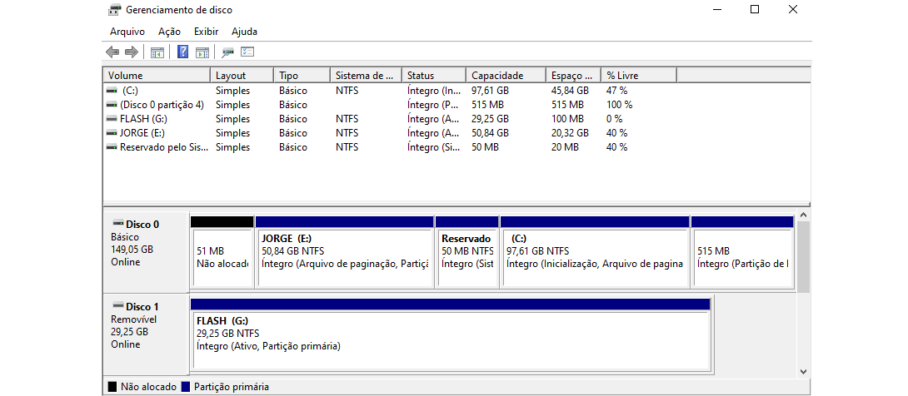

O aplicativo Gerenciamento de Disco é um software utilizado para gerenciar partições de disco no Windows, um mesmo disco, que pode ser um HD ou pendrive, pode conter em si mesmo várias partições com nomes e tamanhos diferentes e que serão exibidas no Explorador de Arquivos como discos diferentes.
Cada disco possui Volumes, que são as partições em si, ou Espaços Não Alocados, que são espaços livres inutilizados que não podem ser utilizados pelo sistema operacional. No Gerenciador de Disco, as unidade aparecerão nomeadas como Disco 0, Disco 1, Disco 2 e assim por diante, e as partições dentro de cada unidade aparecerão como volumes e serão marcadas em azul. Podemos criar partições a partir de espaços não alocados, ou diminuindo o tamanho de outras partições.
Você pode acessar o Gerenciador de Disco indo até o menu Iniciar → Sistema do Windows → Painel de Controle. E no Painel de Controle ir até Sistema e Segurança → Criar e formatar partições do disco rígido.
Você pode ainda abrir o aplicativo Gerenciamento de Disco pressionando ⊞+R e digitando: diskmgmt.msc
ATENÇÃO!!! É necessário muito cuidado ao lidar com partições de disco, para não excluir um volume que contenha seus arquivos pessoais. É aconselhável que só efetue esse processo após mover todos os arquivos para uma unidade externa de backup.